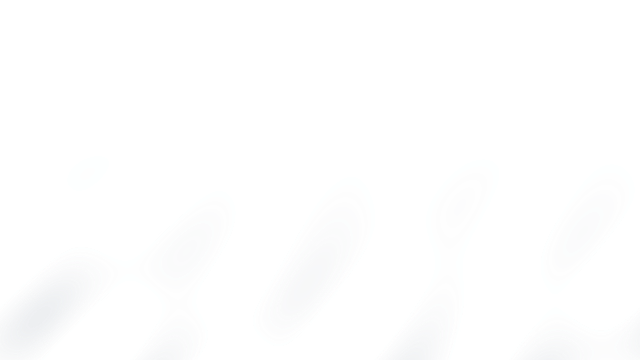
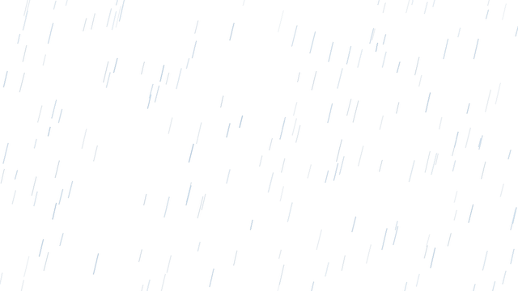

01. Low Fog
Alpha · Foreground · recommended: Dark or mid-tone
This demo animates the actual transparent 640 x 360 PNG sequences at the documented 12 fps. Contrast varies by the recommended background shown per effect.

Alpha · Foreground · recommended: Dark or mid-tone

Alpha / Screen · Foreground · recommended: Dark or mid-tone